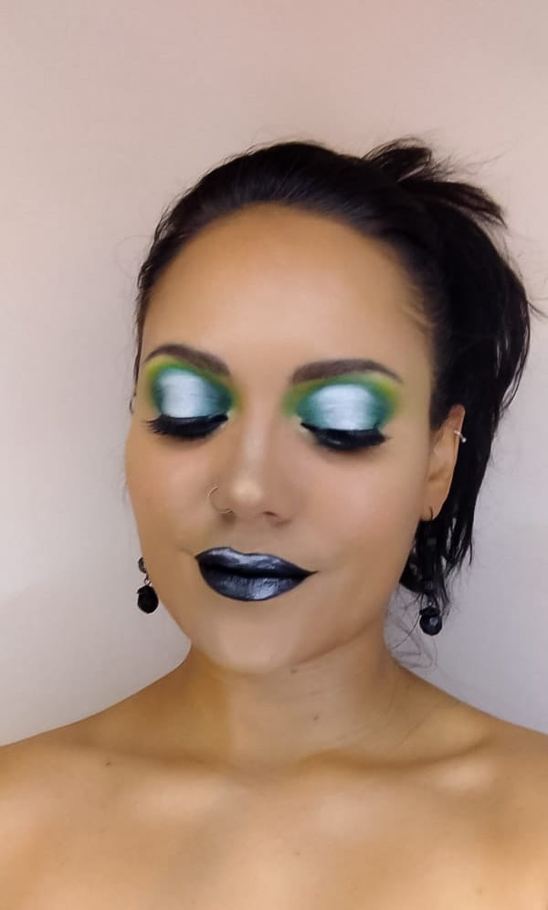
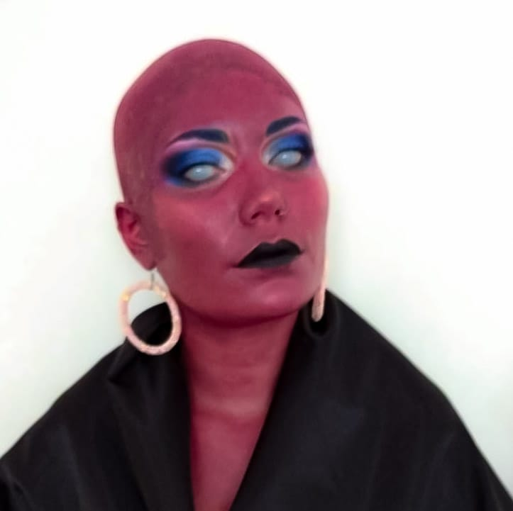
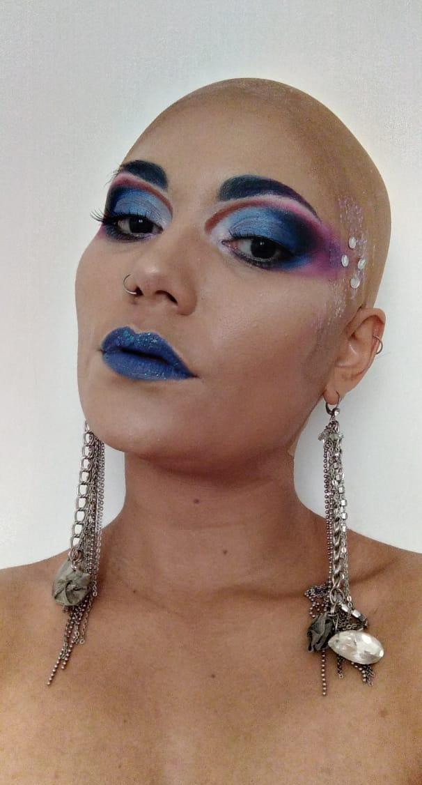
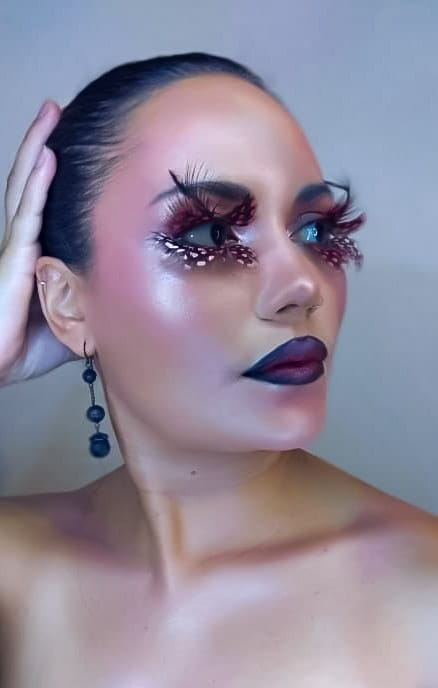

Entrevista del día
Betsabé Arcia hace seis años que es maquilladora profesional, desde muy joven se interesó por el mundo del maquillaje tanto artístico como social, y con varios cursos hechos ha reunido un gran conocimento en el área.
¿Cuántos años llevas como maquilladora?
Desde hace ya 6 años, comencé en 2014.
¿Cuándo te diste cuenta que te gustaba el maquillaje?
A los 15 años ya que lo empecé a estudiar a nivel teatral y de manera informal con mi papá que es actor y productor teatral.
¿Qué tipo de maquillaje disfrutas más hacer?
Me encanta el maquillaje artístico y de efectos especiales.
¿Hasta ahora qué cursos de maquillaje has hecho?
He hecho cursos de maquillaje social, efectos especiales, caracterización protesica, teatral, fantasía, body paint, técnicas complejas para instagram y visagismo.
¿Has pensado en dedicarte de lleno al maquillaje
Sí lo he pensado, dedicarme de lleno al maquillaje; pero también tengo una carrera profesional, trato de alternar ambas cosas, ya que ambas significan mucho para mí y no me gustaría abandonarlas. Sí he pensado en dedicarle más al maquillaje, pero por ahora lo hago por pasión, el dinero proviene de mi carrera principal, incluso con eso he podido pagar todo lo que he hecho en makeup, así que por ahora lo mantengo como una pasión, como un hobby.
¿Cuáles son tus metas en cuanto al maquillaje?
Mis metas en cuanto al maquillaje...volverme un educador y un referente, no busco maquillar en bodas ni nada por el estilo, pretendo maquillar en producciones arísticas...me encantan y es lo que más me gusta y con el tiempo y la experiencia y muchas más capacitaciones obviamente hacer una academia.
A futuro ¿Cómo crees que irán cambiando las tendecias de maquillaje?
Las tendencias del maquillaje irán evolucionando como Hasta ahora con las tecnologías de producto, las técnicas si bien han evolucionado un poco, la gran parte del cambio está en los nuevos productos que hay y los avances tecnológicos en ese rubro, pienso que irá cambiando en cuanto a que es un arte que se está abriendo mucho más a distintos tipos de persona y hay muchisimo en qué explorar, la abertura cultural irá admitiendo muchos estilo que permiten mayor expresión artística y da a lugar para todos los gustos.
Así que creo que es un área que está creciendo muchísimo y va a seguir creciendo, yo pienso que potenciado por las redes sociales es una de las carreras del futuro despues de la tecnología obviamente, porque es arte y a la vez entretenimiento y todos quieren aprender. Pienso que si las personas buscan su nicho de accción , su estilo y su pasión pues van a encontrar un lugar donde explotar muchísimo este campo que tiene mucho para dar.
Para las personas que quieran dedicarse a estudiar esta carrera ¿qué le recomendarías?
Para alguien que quiere estudiar la carrera yo le díria que sea constante, que no se rinda ante los primeros fracasos, porque la verdad que cuando se comienza uno compara mucho con lo que hay hoy en día en la industria de las redes sociales y si nos dejamos influenciar por eso pues nada, nos desanimamos indiscutiblemente, mi consejo pincipal es "la práctica hace al maestro"... o sea si al principio no te salen las cosas como esperabas puede que haya un componente en los materiales, pero indiscutiblemente es la práctica la clave para llegar al resultado que se quiere. Yo tengo todos estos años estudiando y todavía siento que me falta mucha más práctica para lograr lo que quiero y creo que lo principal es disfrutarlo y amarlo.
